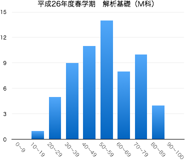

2014年度春学期 解析基礎 Basic Analysis and Practice
火3限 13:20-15:00 | 2-274教室 | 対象：機械工学科1年生
担当：佐藤 弘康（hiroyasu [at] nit.ac.jp | W1棟204 | 0480-33-7972）
三角関数は振動・波動・回転のように繰り返す現象と特に相性がよい。そのため、自然科学のみならず工学のさまざまな分野で三角関数を用いた記述は頻出する。 数学をはじめとする専門科目をスムーズに理解するために、三角関数について学習する。基礎的な計算技法に習熟するとともに、三角関数のグラフや周期性についても理解する。
| 第1回 | 4月 | 8日（火） | ガイダンス，ミニクイズ（三平方の定理，三角形の相似条件） |
| 第2回 | 15日（火） | 三角比 第6章 §1.1 ，三角比の相互関係 第6章 §1.2 [II] （追加問題） | |
| 第3回 | 22日（火） | 三角比の相互関係 第6章 §1.2 [III] ，鈍角の三角比 第6章 §1.3 （追加問題） | |
| 第4回 | 30日（水） | 三角形への応用（三角形の面積，正弦定理，余弦定理） 第6章 §1.4 | |
| 第5回 | 5月 | 13日（火） | 一般角，弧度法，円弧の長さ，おうぎ形の面積 第6章 §2.1 |
| 第6回 | 20日（火） | 三角関数とその性質 (1) 第6章 §2.2(p.178-182) | |
| 第7回 | 27日（火） | 三角関数とその性質 (2) 第6章 §2.2(p.183-184) 三角関数のグラフ 第6章 §2.3 |
|
| 第8回 | 6月 | 3日（火） | 三角関数のグラフ（補足） 小テスト（中間試験） 問題 解答 |
| 第9回 | 10日（火） | 急用のより休講 | |
| 第10回 | 17日（火） | 加法定理 第6章 §3.1 | |
| 第11回 | 24日（火） | 2倍角の公式，半角の公式 第6章 §3.2 | |
| 第12回 | 7月 | 1日（火） | 加法定理の応用（三角関数の合成，積と和の公式） 第6章 §3.3 |
| 第13回 | 8日（火） | 三角方程式，三角不等式 (1) 第6章 §3.4 | |
| 第14回 | 15日（火） | 三角方程式，三角不等式 (2) 第6章 §3.4 | |
| 29日（火） | 期末試験 (12:40 -- 13:40) |
|  |
|